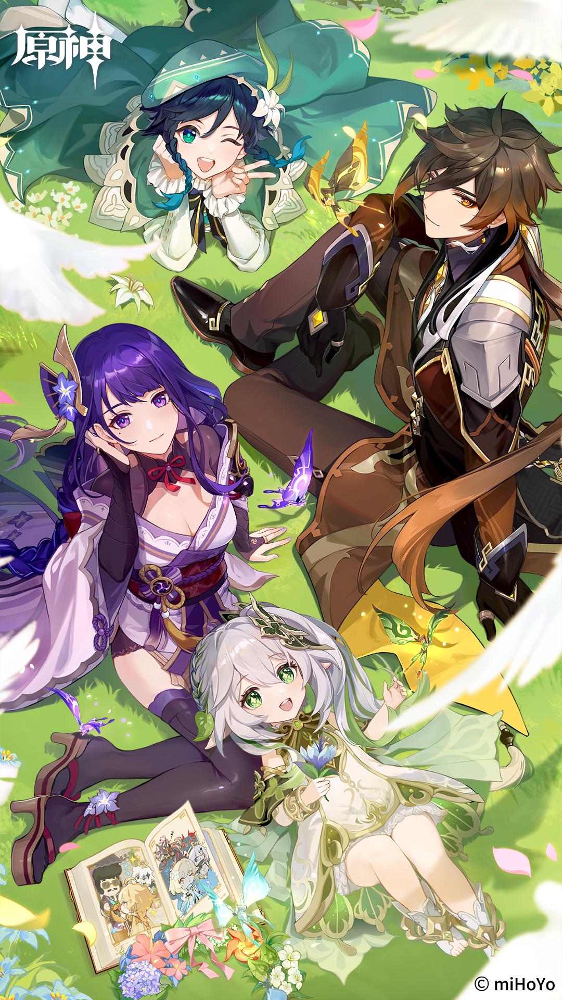
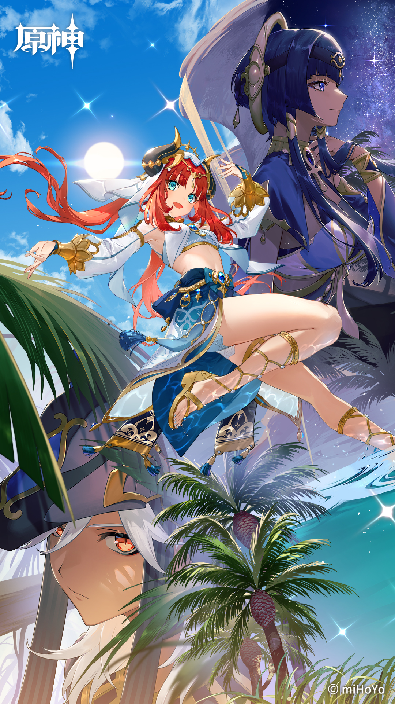
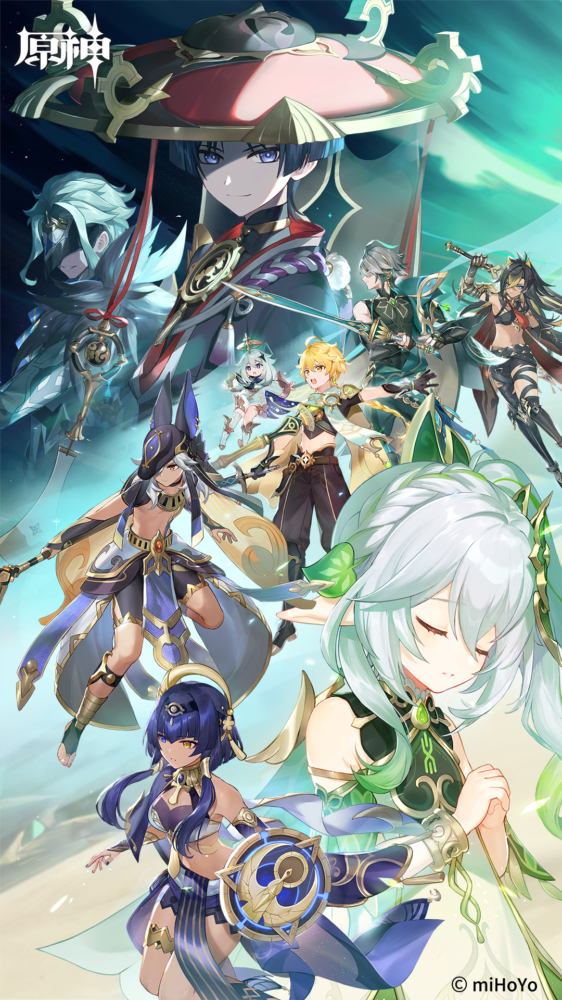
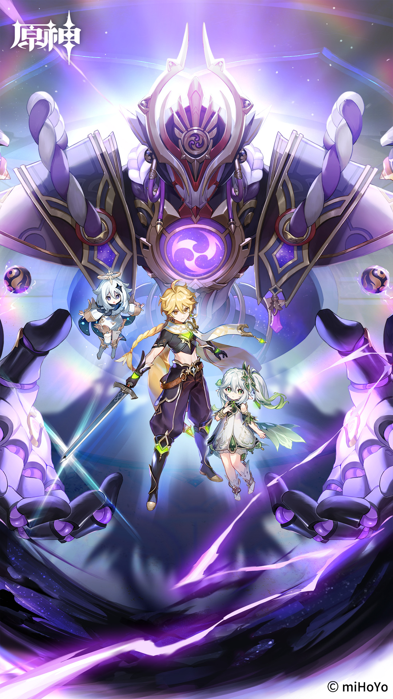
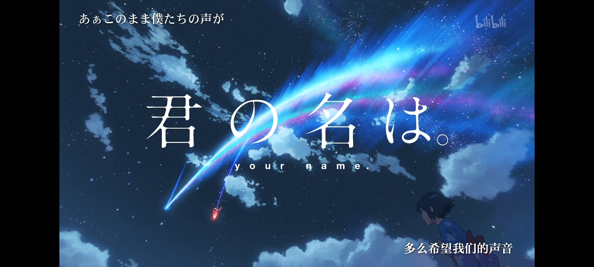
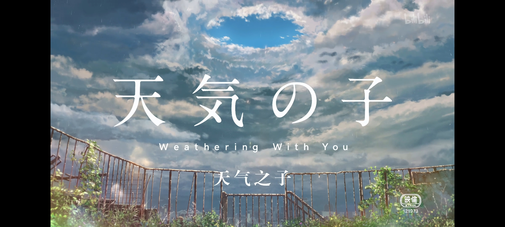

| 首页 | 家乡山水 | 作品展示 | 我的爱好 | 青春寄语 |
| 游戏-----原神（Genshin Impact） |
| 原神：故事发生在一个七种元素交汇的奇幻大陆 - 「提瓦特」，在这里，每个人都可以成为神，而被神选中的人将被授予「神之眼」，导引元素之力。玩家将扮演一位「旅行者」，在自由的旅行中邂逅性格各异、能力独特的同伴们，和他们一起击败强敌，找回失散的亲人——同时，逐步发掘「原神」的真相。 精巧的世界架构，恢弘且极具特色的城市建筑，星罗棋布的神秘领域与种类丰富的自然地形构成了提瓦特大陆的独特风光及广阔无垠的开放探险世界。得益于游戏强大的自由探索系统，玩家可以通过攀爬、游泳甚至飞行等方式跋涉山川河海，遍寻提瓦特大陆上的奇险之地，从而挖掘角色的背景故事真相，或是探索奇幻大陆的隐藏秘密，甚至只是漫步感受曼妙景色，《原神》都提供了极高的自由度让玩家根据自身爱好来全身心感受这款游戏。 |
 |
|  |  |  |
| 动漫电影 |
|  | 《你的名字》讲述了一个在日本小乡镇生活的女高中宫水三叶与在日本东京的一名男高中生因为一个契机互换了身体的故事，男主立花泷与宫水三叶在这样的反复过程当中，两人彼此产生了感情，也都是因为一次千年难遇的彗星滑落，让两人就这样巧妙的相遇了，这部作品，带有的科幻色彩也是丰富的，但是将时空与穿越的这种题材运用得非常精彩，这种巧妙的构思再加上日本动漫中经典的信仰神道教这样的主题融合，在影片当中不仅把这种年少时青涩的感情表达得非常的深入，而且从一定程度上也能看出日本文化的传承。 |
| 《天气之子》讲述了一个奇幻多姿的爱情故事。其中的少女阳莱从小就拥有一种可以操控天气的超能力，在一次偶然中遇到了渴望温暖与爱的少年帆高，两人从相识到相知，在后续的接触中逐渐变得熟悉亲密。他们一同对抗困难，经历了很多奇妙梦幻的故事。 我认为这是一部非常精彩的动画电影，其中的画风细腻唯美，人物塑造也非常清新，主角阳莱和帆高之间的爱情线非常浪漫。这部动画电影不仅有着真挚的情感，还有着深刻的寓意，呼吁人们应该要勇敢面对困难，并且大胆求爱。与此同时，还呼吁大家应该注意环保，不要忽视大自然一次又一次发出的警告。 |
 |